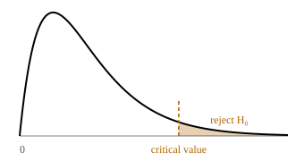

Function reference
Excel first, with the R and Python equivalents beside it. The section on tail directions is where most wrong answers in this course come from — it is worth reading even if you think you know it.
Tail directions: the traps
Nearly every function below has a sibling that returns a different part of the distribution. Picking the wrong one gives a plausible number rather than an obvious error, which is exactly what makes it dangerous.
T.INV(p, df) is a plain left-tail
lookup: it returns the value with probability p below it.
T.INV.2T(α, df) is two-tailed and
splits α between the tails for you.
So T.INV.2T(0.05, 29) equals
T.INV(0.975, 29) = 2.045. It does not
equal T.INV(0.95, 29) = 1.699. Passing α/2 to
T.INV.2T halves it twice.
CHISQ.INV.RT(α, df) gives the right-tail
critical value, which is the one you almost always want — a χ²
statistic cannot be negative, so there is no left tail to reject in.
CHISQ.INV.RT(0.05, 2) =
CHISQ.INV(0.95, 2) = 5.99. There is no function called
CHI.INV.RT.

For continuous distributions P(X < 10) and P(X ≤ 10) are the same. For counts they are not, because 10 has a probability of its own.
P(X < 10) → BINOM.DIST(9, …, TRUE)
P(X > 15) → 1 - BINOM.DIST(15, …, TRUE)
P(X = 8) → BINOM.DIST(8, …, FALSE)
TRUE gives the area under the curve up to your value — a
probability, and almost always what you want. FALSE gives
the height of the curve at that point, which is only meaningful for
discrete distributions where it is the probability of that exact
outcome.
Descriptive statistics
| Quantity | Excel | R | Python |
|---|---|---|---|
| Count | COUNT(r) | length(x) | len(x) |
| Mean | AVERAGE(r) | mean(x) | x.mean() |
| Median | MEDIAN(r) | median(x) | x.median() |
| Mode | MODE.SNGL(r) | — | x.mode()[0] |
| Sample sd | STDEV.S(r) | sd(x) | x.std() |
| Population sd | STDEV.P(r) | — | x.std(ddof=0) |
| Sample variance | VAR.S(r) | var(x) | x.var() |
| Skewness | SKEW(r) | e1071::skewness(x, type=2) | x.skew() |
| Quartiles | QUARTILE.INC(r, n) | quantile(x, p) | x.quantile(p) |
Excel makes you choose: STDEV.S divides by n−1,
STDEV.P by n. A survey is a sample, so it is nearly
always .S.
R's sd() and pandas'
.std() both default to n−1. NumPy does not
— np.std(x) divides by n, so you need
np.std(x, ddof=1) to match Excel. This catches people out
constantly.
Distributions
| Task | Excel | R | Python (scipy.stats) |
|---|---|---|---|
| Normal, value → probability | NORM.DIST(x, μ, σ, TRUE) |
pnorm(x, μ, σ) |
norm.cdf(x, μ, σ) |
| Normal, probability → value | NORM.INV(p, μ, σ) |
qnorm(p, μ, σ) |
norm.ppf(p, μ, σ) |
| Standard normal → probability | NORM.S.DIST(z, TRUE) |
pnorm(z) |
norm.cdf(z) |
| Standard normal → value | NORM.S.INV(p) |
qnorm(p) |
norm.ppf(p) |
| Binomial, cumulative | BINOM.DIST(k, n, p, TRUE) |
pbinom(k, n, p) |
binom.cdf(k, n, p) |
| Binomial, exact | BINOM.DIST(k, n, p, FALSE) |
dbinom(k, n, p) |
binom.pmf(k, n, p) |
| Poisson, cumulative | POISSON.DIST(k, λ, TRUE) |
ppois(k, λ) |
poisson.cdf(k, λ) |
| Poisson, exact | POISSON.DIST(k, λ, FALSE) |
dpois(k, λ) |
poisson.pmf(k, λ) |
| Poisson, inverse | none — step k up by hand | qpois(p, λ) |
poisson.ppf(p, λ) |
R and Python both offer a direct upper tail — lower.tail = FALSE
and .sf() — which saves the 1 - … rearrangement.
Excel has no equivalent, so in Excel you always subtract from 1.
Hypothesis testing
| Task | Excel | R | Python (scipy.stats) |
|---|---|---|---|
| Critical z, one-tailed | NORM.S.INV(1-α) |
qnorm(1-α) |
norm.ppf(1-α) |
| Critical z, two-tailed | NORM.S.INV(1-α/2) |
qnorm(1-α/2) |
norm.ppf(1-α/2) |
| Critical t, two-tailed | T.INV.2T(α, df) |
qt(1-α/2, df) |
t.ppf(1-α/2, df) |
| Critical t, one-tailed | T.INV(1-α, df) |
qt(1-α, df) |
t.ppf(1-α, df) |
| p from t, two-tailed | T.DIST.2T(|t|, df) |
2*pt(-|t|, df) |
2*t.sf(|t|, df) |
| p from t, one-tailed | T.DIST.RT(t, df) |
pt(t, df, lower.tail=FALSE) |
t.sf(t, df) |
| Paired/2-sample t from raw data | T.TEST(r1, r2, tails, type) |
t.test(x, y, paired=TRUE) |
ttest_rel(x, y) |
| t from summary statistics | none — use the workbench | BSDA::tsum.test(...) |
ttest_ind_from_stats(...) |
| Critical χ² | CHISQ.INV.RT(α, df) |
qchisq(1-α, df) |
chi2.isf(α, df) |
| p from χ² | CHISQ.DIST.RT(x, df) |
pchisq(x, df, lower.tail=FALSE) |
chi2.sf(x, df) |
Summary statistics. Excel has no function that runs
a test from n, the mean and the standard deviation — nor does base R
(t.test wants raw data; you need
BSDA::tsum.test). SciPy does, via
ttest_ind_from_stats. This is why the
workbench
exists.
Yates' correction. R's
chisq.test() applies a continuity correction to 2×2
tables by default, so it will disagree with your hand
calculation and with Excel. Pass correct = FALSE to match.
SciPy's chi2_contingency does the same — pass
correction=False.
Regression
| Quantity | Excel | R | Python |
|---|---|---|---|
| Gradient | SLOPE(y, x) | coef(lm(y~x))[2] | linregress(x,y).slope |
| Intercept | INTERCEPT(y, x) | coef(lm(y~x))[1] | linregress(x,y).intercept |
| R² | RSQ(y, x) | summary(lm(y~x))$r.squared | linregress(x,y).rvalue**2 |
| Everything at once | LINEST(y, x, TRUE, TRUE) | summary(lm(y~x)) | linregress(x, y) |
LINEST returns the gradient first and the intercept
second — the opposite order to how you write the equation.
SLOPE and INTERCEPT are harder to mix up.
Excel version differences
- Analysis ToolPak. Available on Windows and, since Excel 2016, on macOS — but not in Excel for the web. Everything in these tutorials can be done without it.
- Dynamic arrays. In Microsoft 365 and Excel 2021,
LINESTspills its results across cells automatically. In older versions you must select the output range and confirm with Ctrl+Shift+Enter. - Legacy function names.
STDEV,VAR,MODE,NORMDIST,TINVandCHIINVstill work for backwards compatibility. Use the current dotted names — they are clearer about which tail and which divisor you are getting. - List separators. Some regional settings use a
semicolon instead of a comma between arguments. If
=NORM.DIST(15,25,12,TRUE)errors, try semicolons.